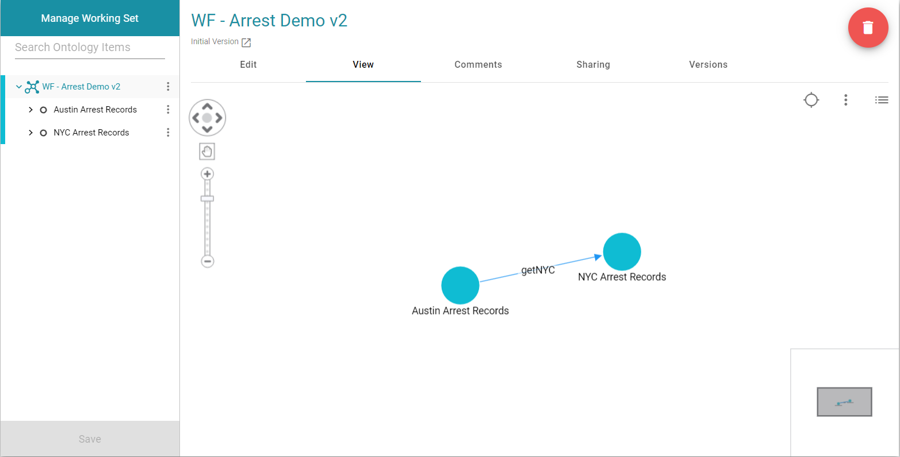
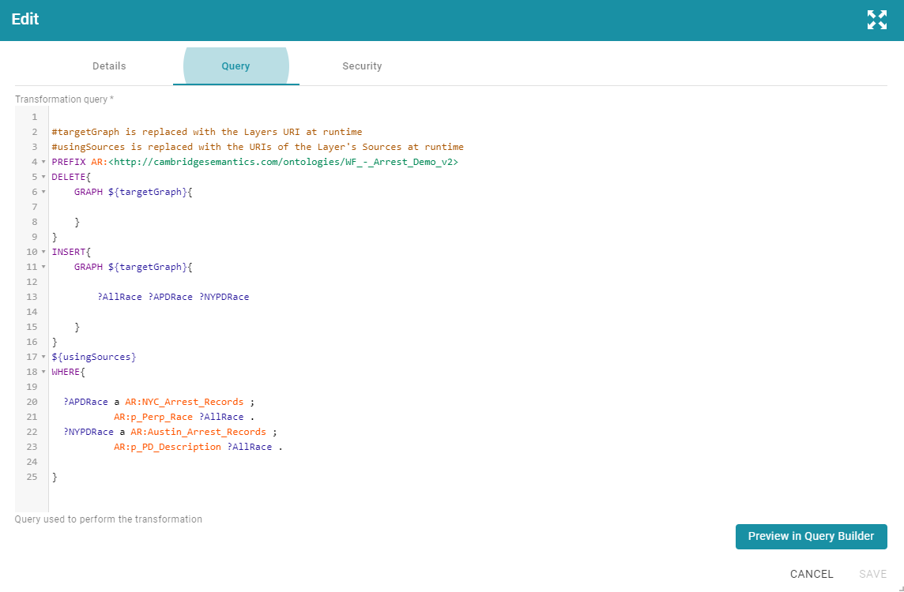
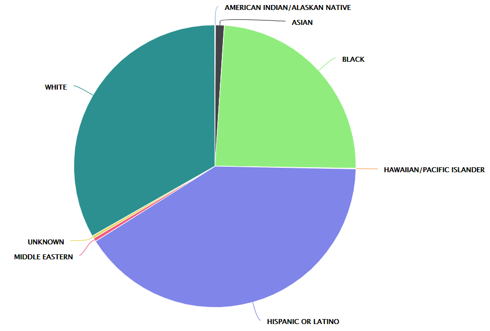
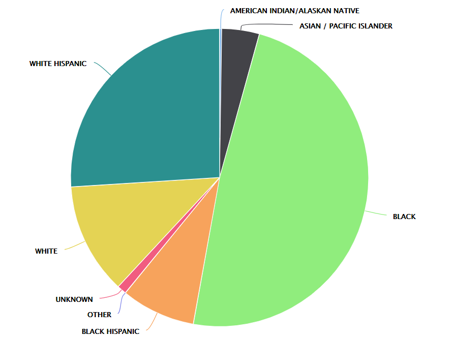

This project was the start of my internship at Cambridge Semantics. We were given free reign to chose a topic and create a demo that showed off our ability to work with Anzo.

An overview of the data model.

SPARQL Query connecting race CSV data source to AllRace class.

A pie chart breakdown of race's arrested by Austin PD.

A pie chart breakdown of race's arrested by New York City PD.